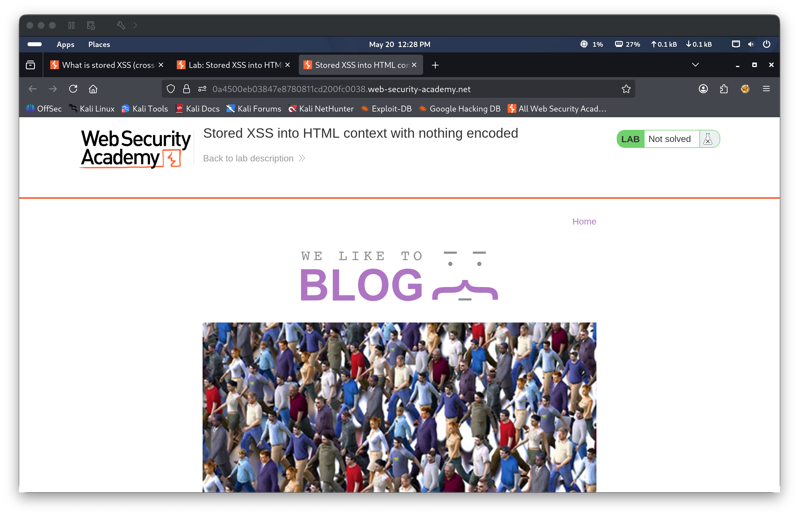
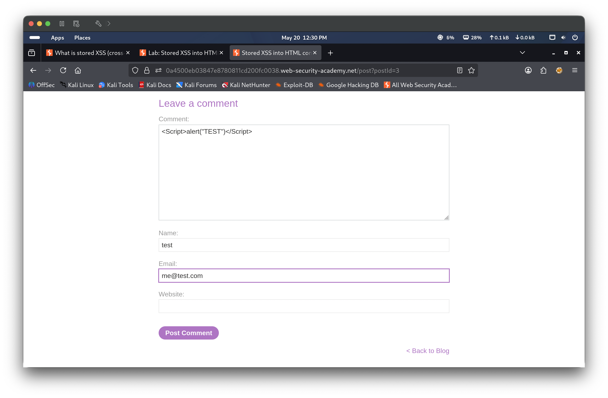
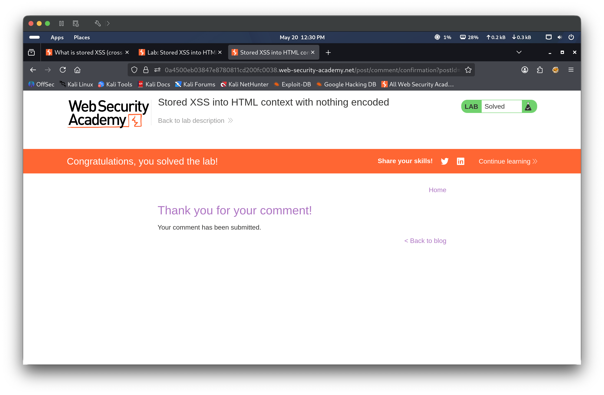
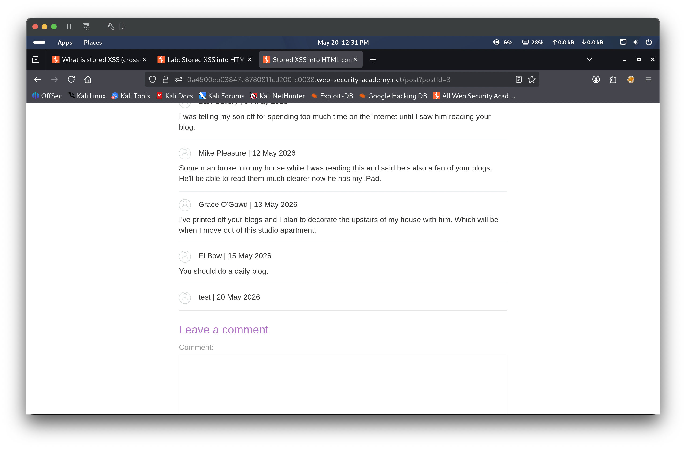
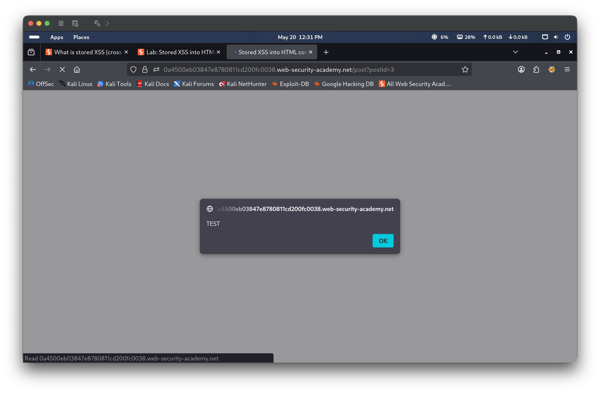

Portfolio / Labs / XSS / Lab 2 — Stored XSS into HTML context with nothing encoded
Lab 2 — Stored XSS into HTML context with nothing encoded
⚪ 🟡 Medium📅 2026-05-20
📋 Finding Summary
Field
Value
Type
Web App
Severity
🟡 Medium
CVE / CWE
CWE-79
Date
2026-05-20
🔍 Description
Stored Cross-Site Scripting (XSS) occurs when user-supplied input is saved to the server and later rendered in the browser without sanitization or output encoding. Unlike reflected XSS, the payload persists in the application and executes automatically for every user who views the affected page. In this lab, the blog comment functionality stores the comment body directly into the database and renders it unsanitized in the HTML response, allowing an attacker to inject a persistent script that executes in any visitor’s browser.
🎯 End Goals
Submit a comment containing a script payload that calls the alert function
Confirm the payload is stored and executes when the blog post is viewed
Solve the lab
🪜 Steps to Reproduce
Access the lab and navigate to a blog post
Fill in the comment form with an XSS payload in the Comment field and submit
Observe that the comment is stored and the lab is marked as solved
Navigate back to the blog post and confirm the alert fires automatically on page load
🧠 Analysis
Step 1 — Access the lab
The lab environment loaded a blog application showing a list of posts. The lab status showed “Not solved”, indicating no prior interaction.

Step 2 — Submit XSS payload as a comment
A blog post was opened and the comment form was filled with the payload <Script>alert("TEST")</Script> in the Comment field, along with name “test” and email “me@test.com”. The form was submitted by clicking Post Comment. The application accepted the input without any validation or sanitization, storing the raw script tag in the database.

Step 3 — Comment submitted, lab solved
After submitting the comment, the page displayed “Thank you for your comment! Your comment has been submitted.” and the lab status banner updated to Solved, confirming the stored payload was accepted.

Step 4 — Revisit blog post — stored comment visible
Navigating back to the blog post revealed the stored comment by “test | 20 May 2026”, confirming the payload was persisted in the application and rendered into the page HTML.
(Drag 05.png here)

Step 5 — alert() fires
Upon loading the blog post, the stored script executed automatically and an alert dialog appeared with the text “TEST”. This confirmed that the injected payload runs in the browser of any user who visits the page — without any further interaction required. The alert fired on each subsequent page load, demonstrating the persistent nature of the vulnerability.

🎯 Impact
An attacker who can submit a stored XSS payload has persistent code execution in the browsers of all users who view the affected page. This can be used to hijack session cookies, steal credentials via fake login forms, perform actions on behalf of victims, redirect users to phishing or malware sites, or conduct large-scale attacks against all visitors — including administrators — without requiring them to click a crafted link.